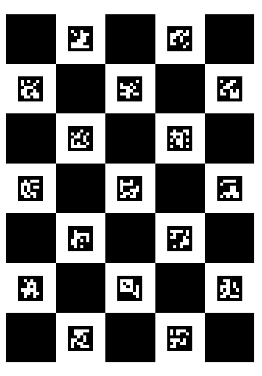

Everything was imported succesfullyMMLab: Calibration with Anipose

0.1 Info Documents
location repository: anipose documentation: https://anipose.readthedocs.io/en/latest/aniposelib-tutorial.html
0.2 Requirements
Please install the necessary packages in requirements.txt using pip install -r requirements.txt
0.3 CODE OVERVIEW
This script allows you to to calibrate your cameras, producing a toml file with the results of the cameras intrinsics and extrinsics angles that are needed to then further triangulate your 2D tracking. The script process multiple video files from different session, outputting the calibration results for each session.
Packages The script imports essential Python libraries for file handling, video processing, and camera calibration. See requirements.txt for all necessary packages (pip install -r requirements.txt)
Key Variables Users defines the input and output directories for the calibration videos and results.
Videos When inputing the videos, the script checks for the following requirements.
- video_extension (e.g., “avi”, “mp4”, etc.)
- number of videos in each folder (all processed together to calculate intrinsic and extrinsic angles). For Triangulation in 3D tracking, at least 3 videos are needed
- board_type (e.g., “charuco”, “checker”). This string must appear in the file name of the videos. Change or remove accordingly.
Cameras camera_names, i.e., name for each camera that is consitent with the file name for each video (after Video Segmentation)
Board The script supports the use of different calibration boards, such as ChArUco or Checkerboard, to extract calibration data. Board Dimensions:
- X and Y represent the number of squares in the vertical and horizontal directions on the board.
- square_length: The side length of each square on the board, typically measured in millimeters (e.g., 25 mm).
- marker_length: The side length of each marker within the squares, usually smaller than the square length (e.g., 18.75 mm).
- marker_bits: Describes the dimension of the markers, usually represented by 4x4 bits (default setting).
- dict_size: Specifies the number of different markers in the dictionary (e.g., 50 types defaylt setting). !! These parameters should be adjusted according to the specific calibration board you are using to ensure accurate camera calibration.
Calibration (with Loop) The script processes videos from multiple sessions to calibrate cameras and generate a .toml file containing the intrinsic and extrinsic parameters needed for 3D triangulation.
The script iterates through subdirectories in the input folder, identifying sets of videos based on specified criteria (e.g., file extension, number of videos, and board type).
Only directories with the correct number of videos (e.g., 3 for triangulation) and matching the specified criteria are processed.
aniposelib to perform calibration, leveraging the ChArUco or Checkerboard configurations set by the user.
- The CameraGroup object is created to treat all identified cameras as a unit for calibration.
- Calibration data is calculated based on the detected board markers across multiple camera angles.
After calibration, the script automatically generates a filename for the results based on the input video characteristics. The calibration results, including camera intrinsics and extrinsics, are saved as a .toml file in the specified output folder. The saved file is structured for easy retrieval and further processing, ensuring that the calibration data is ready for use in subsequent 2D or 3D tracking tasks.
1 0. Importing Necessary Packages
We use the following charucoboard, which when printed on a A1, gives the below dimensions you need to set for your anipose settings.

2 1. Defyining relevant Directories, Variables & Functions
Input folder = e:\research_flesh\GtSTcollab\calibration_videos_split\test
Output folder = e:\research_flesh\GtSTcollab\calibration_results\P2[]3 2. Calibrating Videos using Anipose (in Loop)
Anipose will calibrate the following videos: [['f:\\Mobile-Multimodal-Lab\\2_PREPROCESSING\\3_MOTION_TRACKING\\2_Video_Calibration\\calibration_videos_split\\test\\charuco_calibration_oneover250s_high_quality_2024-04-23_output_compr - Trim_cam1.avi'], ['f:\\Mobile-Multimodal-Lab\\2_PREPROCESSING\\3_MOTION_TRACKING\\2_Video_Calibration\\calibration_videos_split\\test\\charuco_calibration_oneover250s_high_quality_2024-04-23_output_compr - Trim_cam2.avi'], ['f:\\Mobile-Multimodal-Lab\\2_PREPROCESSING\\3_MOTION_TRACKING\\2_Video_Calibration\\calibration_videos_split\\test\\charuco_calibration_oneover250s_high_quality_2024-04-23_output_compr - Trim_cam3.avi']]
f:\Mobile-Multimodal-Lab\2_PREPROCESSING\3_MOTION_TRACKING\2_Video_Calibration\calibration_videos_split\test\charuco_calibration_oneover250s_high_quality_2024-04-23_output_compr - Trim_cam1.avi0 boards detected
f:\Mobile-Multimodal-Lab\2_PREPROCESSING\3_MOTION_TRACKING\2_Video_Calibration\calibration_videos_split\test\charuco_calibration_oneover250s_high_quality_2024-04-23_output_compr - Trim_cam2.avi0 boards detected
f:\Mobile-Multimodal-Lab\2_PREPROCESSING\3_MOTION_TRACKING\2_Video_Calibration\calibration_videos_split\test\charuco_calibration_oneover250s_high_quality_2024-04-23_output_compr - Trim_cam3.avi0 boards detected--------------------------------------------------------------------------- ValueError Traceback (most recent call last) Cell In[27], line 19 16 #-------- Calibration -------- 17 cgroup = CameraGroup.from_names(camera_names) # cgroup is an object used to refer to all of the cameras as a single unit. ---> 19 cgroup.calibrate_videos(video_files, board) # Calibration of videos in video_files, using the board speicification 21 # Saving 22 output_name = str(num_videos) + 'vid_' + video.split('output_compr')[0] + '_calibration_anipose.toml' #Creating the name of output_file with numvid_name video before word "output_compr"_calibration_anipose File ~\AppData\Roaming\Python\Python311\site-packages\aniposelib\cameras.py:1650, in CameraGroup.calibrate_videos(self, videos, board, init_intrinsics, init_extrinsics, verbose, **kwargs) 1647 if init_extrinsics: 1648 self.set_camera_sizes_videos(videos) -> 1650 error = self.calibrate_rows(all_rows, board, 1651 init_intrinsics=init_intrinsics, 1652 init_extrinsics=init_extrinsics, 1653 verbose=verbose, **kwargs) 1654 return error, all_rows File ~\AppData\Roaming\Python\Python311\site-packages\aniposelib\cameras.py:1592, in CameraGroup.calibrate_rows(self, all_rows, board, init_intrinsics, init_extrinsics, verbose, **kwargs) 1590 objp, imgp = board.get_all_calibration_points(rows) 1591 mixed = [(o, i) for (o, i) in zip(objp, imgp) if len(o) >= 9] -> 1592 objp, imgp = zip(*mixed) 1593 matrix = cv2.initCameraMatrix2D(objp, imgp, tuple(size)) 1594 camera.set_camera_matrix(matrix.copy()) ValueError: not enough values to unpack (expected 2, got 0)
3